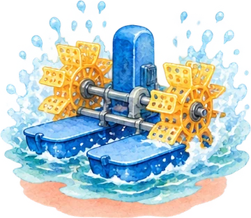
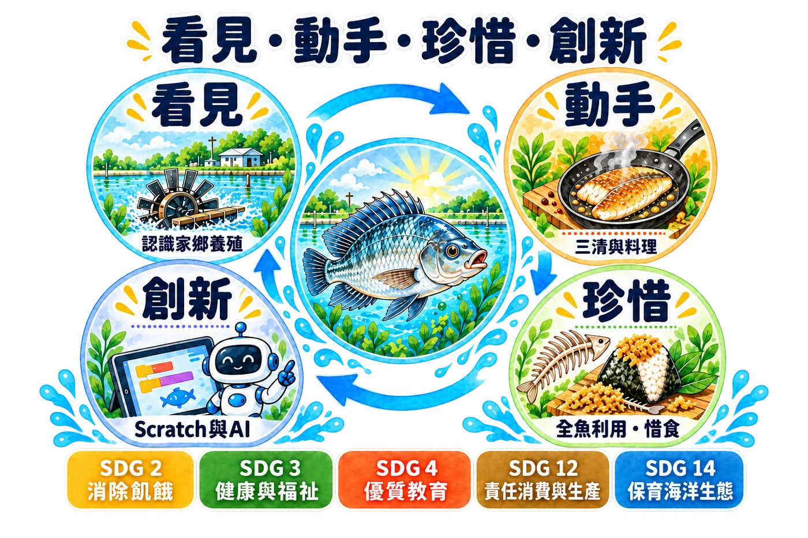
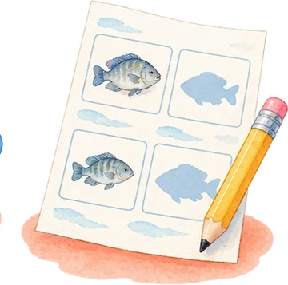
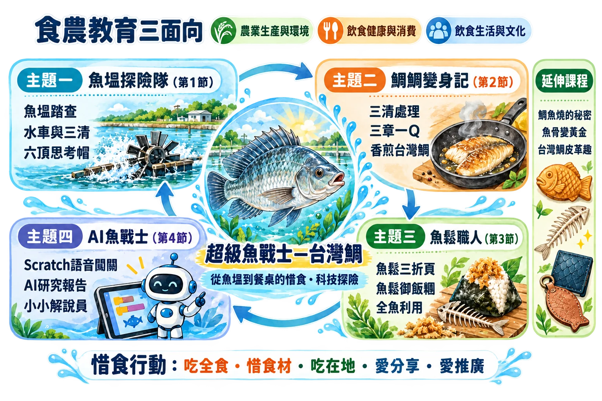
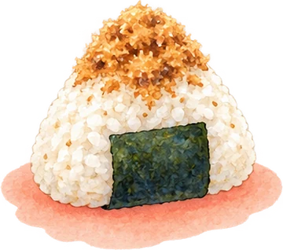
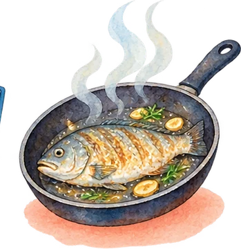
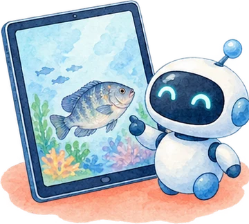
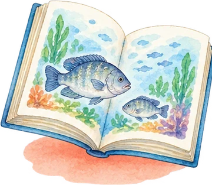
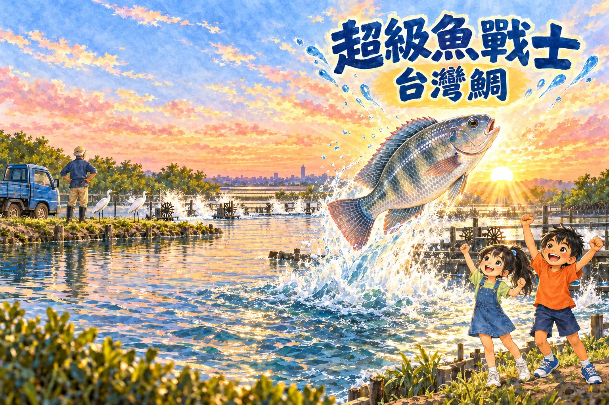
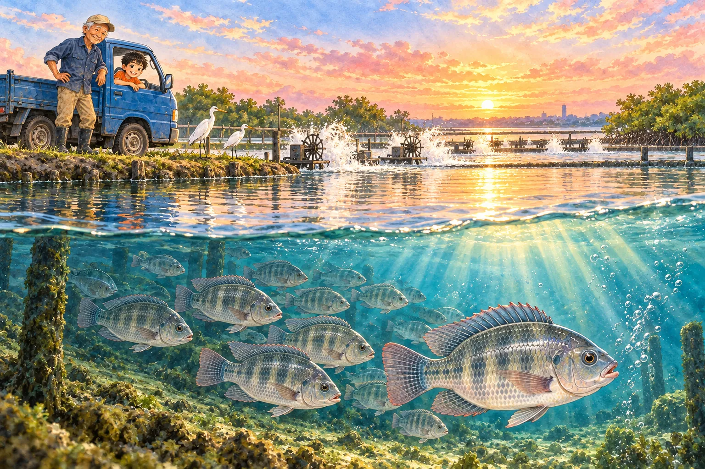

主題一・第1節
魚塭探險隊
認識超級魚戰士的家
- 5分鐘引起動機繪本動畫導讀
- 25分鐘發展活動魚塭實地踏查
- 10分鐘綜合活動六頂思考帽說魚塭
Padlet 議題2・3
食農教育課程 ∘ ∘ ∘ 國小五年級
台灣鯛 ∘ ∘ ∘ 從魚塭到餐桌的惜食・科技探險
SUPER FISH WARRIOR

ABOUT
本校位於臺南沿海的魚塭聚落，昔日是台江內海，泥沙淤積後留下低窪、帶鹹的土地，先民挖成一口口魚塭，造就了今日放眼望去水車轉動的養殖地景。許多孩子的家人就是養殖戶，營養午餐也常出現台灣鯛，但孩子對「家門口的魚」卻十分陌生：不知道牠為什麼叫台灣鯛、不知道阿公為了寒流要半夜巡塭，甚至因為怕刺、怕腥而把魚肉剩在餐盤裡。我們希望讓孩子重新「看見」家鄉的養殖產業，進而珍惜每一口得來不易的食物。
教學團隊自編在地繪本《超級魚戰士—台灣鯛》，以五年級的阿土、養殖30年的阿公與魚塭裡的領頭魚「鯛鯛」為主角，18個跨頁依序走過魚塭歷史、吳郭魚的由來、口孵育幼、水車與三清、凌晨收成、食農教室料理、學校午餐三章一Q、全魚利用、寒害、鯛魚燒與AI科技。繪本並製作成配音動畫，作為每一節課的「引起動機」與情境主線，讓抽象的產業知識變成孩子能共感的故事。
課程完整涵蓋食農教育三面向：在「農業生產與環境」面向實地踏查魚塭、認識養殖科技與寒害風險；在「飲食健康與消費」面向學習三清處理、營養與三章一Q選購；在「飲食生活與文化」面向動手煎魚、炒魚鬆、共食分享並認識日本鯛魚燒文化。全程融入環境部惜食行動指南的「吃全食、惜食材、吃在地、愛分享、愛推廣」，以「全魚利用」讓魚頭、魚骨、魚皮、魚鱗、內臟都不浪費，實踐零廚餘。
課程以「看見—動手—珍惜—創新」四階段設計：看見產地的辛勞、動手料理在地食材、珍惜全魚資源，最後運用Scratch語音互動闖關遊戲與生成式AI，讓孩子成為能查證資訊、會用科技推廣在地食材的「超級魚戰士」。並搭配六頂思考帽、魚鬆三折頁、闖關護照與實作評量規準，落實多元評量，呼應SDG 2、3、4、12、14等永續發展目標。
教學團隊建置「超級魚戰士—台灣鯛．吳郭魚」Padlet 議題交流牆，設計六大探究議題：①台灣鯛的身世之謎、②外來種的功與過、③養殖漁業大追蹤、④餐桌上的台灣鯛、⑤台灣鯛與SDGs、⑥我是台灣鯛代言人，分別對應四節課的學習重點。學生課後以文字、照片、新聞連結與AI創作張貼觀點，再以按讚與留言進行同儕回饋，教師據以進行形成性評量。其中「外來種的功與過」引導學生思辨吳郭魚帶來的經濟價值與生態衝擊，培養多元觀點與批判思考；掃描QR Code即可進入，家長也能一同參與，讓食農學習從教室延伸到家庭。


STRUCTURE


LESSONS
主題一・第1節
認識超級魚戰士的家
Padlet 議題2・3

主題二・第2節
三清處理與香煎台灣鯛
Padlet 議題1・4
主題三・第3節
台灣鯛魚鬆與全魚惜食
Padlet 議題5

主題四・第4節
科技闖關與成果發表
Padlet 議題6
認識日本「鯛」指的是海水的真鯛，是喜慶吉祥的象徵，鯛魚燒只是做成魚的形狀；學生把自製台灣鯛魚鬆包進麵糊，烤出「真的有鯛魚的鯛魚燒」，比較臺日飲食文化。
收集魚骨、內臟與廚餘放入校園廚餘機發酵成堆肥，施用於學校自給農園種植蔬菜，並介紹「魚菜共生」：魚的排泄物養菜、菜淨化水再回到魚池，完成資源循環。
認識魚皮也能鞣製成皮革的全魚利用概念，學生在台灣鯛造型的壓紋皮革上描繪鱗片與魚鰭、彩繪上色，製作成鑰匙圈，體會「魚的盔甲變成我的寶物」，並在跨校交流時擔任小小解說員分享成果。

PICTURE BOOK



第 1 跨頁 / 18
清晨的臺南安南區土城，天剛亮，魚塭上一排排水車轉啊轉，打起白色的水花。阿土坐在阿公的小貨車上，沿著田埂巡魚塭。水面下，一群銀灰色的台灣鯛正排著隊游過去，領頭的那一尾特別壯，阿土叫牠「鯛鯛」，說牠是魚塭裡的超級魚戰士。
ANIMATION
18 幕跨頁插圖配上鏡頭推移與轉場，旁白、阿土、小晴、阿公、阿忠叔叔、老師、營養師阿姨皆有 AI 語音配音，字幕標示說話角色。各節「引起動機」播放對應段落：第1節第1～3幕、第2節第4～5幕、第3節第11與13幕、第4節第16幕。
ASSESSMENT
SLIDES
DISCUSSION
掃描或點選進入
開啟 Padlet議題1｜台灣鯛的身世之謎第2節
吳郭魚從哪裡來？為什麼改名叫「台灣鯛」？
吳郭魚原產非洲，民國35年由吳振輝、郭啟彰兩位先生自新加坡帶回臺灣；品種改良後改名台灣鯛。
議題2｜外來種的功與過第1節
吳郭魚跑進河川、湖泊後，對本土魚類有什麼影響？
吳郭魚適應力強、繁殖快，會與本土魚搶食物和地盤；有同學引用天下CSR報導，思辨外來種取好聽名字是否合適。
議題3｜養殖漁業大追蹤第1節
台灣鯛是怎麼被養大的？養殖方式對環境友善嗎？
台灣鯛多養在臺南、嘉義、高雄、屏東的魚塭；水車把空氣打進水裡，讓魚有足夠氧氣。
議題4｜餐桌上的台灣鯛第2節
為什麼有人覺得有「土味」？我們怎麼挑選安心的魚？
土味來自藍綠藻產生的土臭素，上市前移到乾淨水中暫養即可去除；挑魚看眼睛、魚鰓與魚身彈性。
議題5｜台灣鯛與SDGs第3節
怎樣做到永續養殖與負責任的消費？我可以做什麼？
連結SDG 14保育海洋生態、SDG 12負責任的消費與生產；分享台灣鯛魚皮、魚鱗、魚骨都能利用的新聞。
議題6｜我是台灣鯛代言人第4節
如果要把臺南在地的台灣鯛推廣給全世界，你會怎麼設計？
設計吉祥物「鯛鯛俠」與廣告標語「台灣鯛，鯛皮又好吃！」等推廣作品。